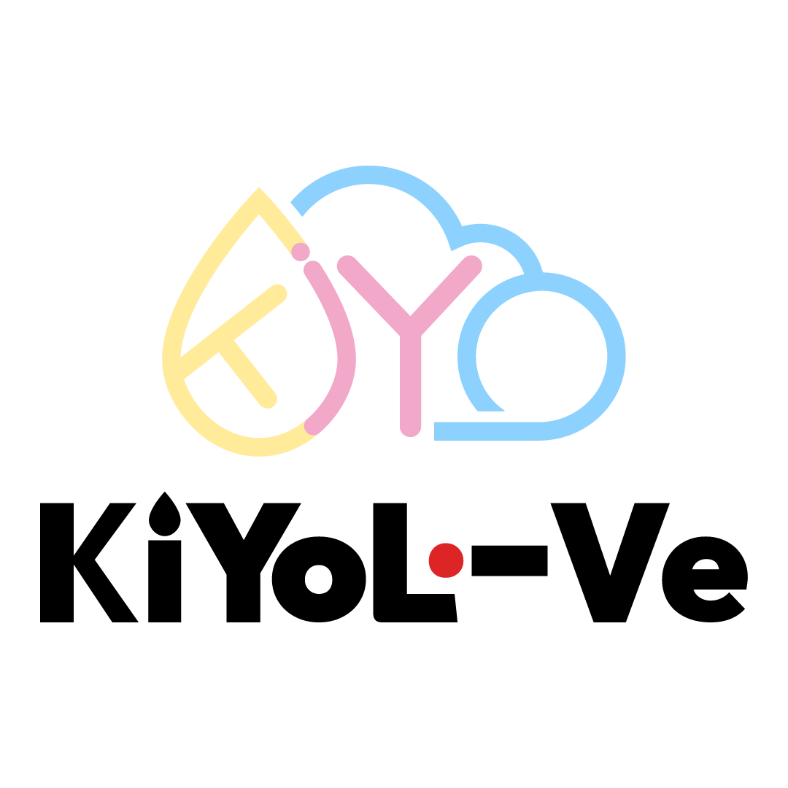

고유한 개성
아티스트의 목소리와 취향, 표현 방식을 존중합니다. 각자의 색이 충분히 드러나는 음악과 콘텐츠를 지향합니다.

ABOUT KIYOLiVE

서로 다른 목소리와 취향, 저마다의 이야기가 만납니다.
키요라이브는 그 다채로움에서 새로운 음악과 무대가 시작된다고 믿습니다.
OUR STORY
키요라이브는 방송과 음악을 함께 꿈꾸는 버추얼·인디 아티스트를 위한 엔터테인먼트입니다. 각자의 음악을 만들고 표현하는 일에 집중할 수 있도록 제작 환경을 함께 만들어갑니다.
아티스트가 가진 고유한 감성과 창작의 방향을 존중하며, 자신만의 이야기를 세상에 전할 수 있는 기반을 함께 만들어갑니다.
우리에게 음악은 아티스트의 세계를 들려주는 언어이고, 방송은 그 세계를 팬과 함께 넓혀가는 시간입니다. 한 곡의 노래에서 시작된 만남이 일상의 대화로, 또 새로운 창작으로 이어지는 관계를 소중히 생각합니다.
아티스트마다 걸음의 속도와 필요한 환경은 다릅니다. 키요라이브는 그 차이에 귀 기울이며 음악적 기반과 제작 환경을 함께 고민합니다. 자유롭게 시도하고 서로의 경험을 나누며, 오래도록 창작을 이어갈 수 있는 팀을 지향합니다.
아티스트의 목소리와 취향, 표현 방식을 존중합니다. 각자의 색이 충분히 드러나는 음악과 콘텐츠를 지향합니다.
버추얼과 인디, 음악과 방송을 오가며 다양한 표현을 탐색합니다. 서로 다른 창작자의 만남에서 새로운 가능성을 찾습니다.
아티스트가 꾸준히 창작하고 팬과 만나며 성장할 수 있는 환경을 꿈꿉니다. 함께 만드는 무대가 오래 이어지기를 바랍니다.